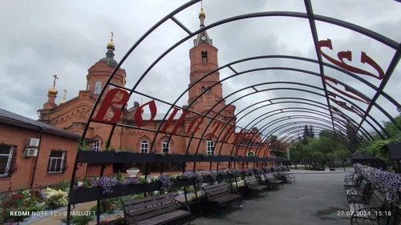
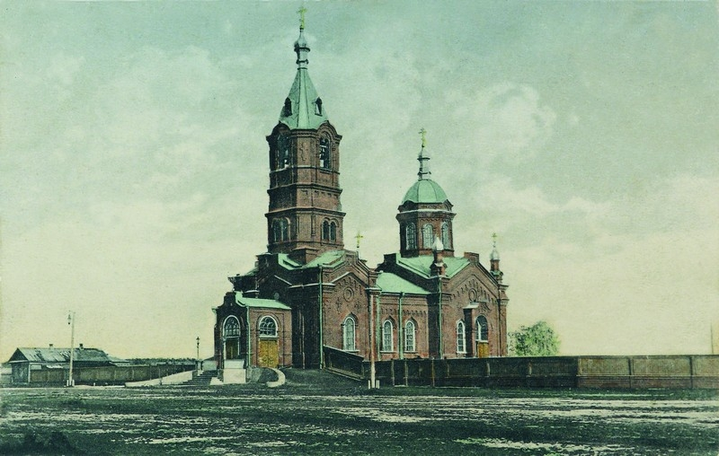
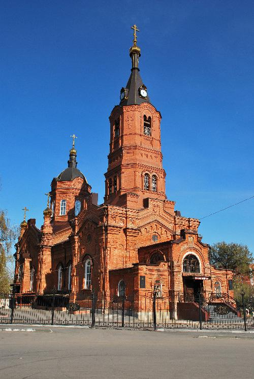

.png)
История Александро-Невского Кафедрального Собора
Собор Александра Невского (Алекса́ндро-Не́вский собо́р) — православный храм в Кургане, кафедральный собор Курганской митрополии и епархии Русской православной церкви. Храм был освящён во имя святого благоверного князя Александра Невского 22 июня (5 июля) 1902 года и 6 декабря 1991 года. Один из двух (наряду с курганским Богоявленским кафедральным собором, освящённым в 2015 году) кафедральных храмов Курганской и Белозерской епархии.
Поводом к началу строительства послужил приезд 21 января (2 февраля) 1895 года архиепископа Тобольского и Сибирского Агафангела. Архипастырю доложили о необходимости возведения нового храма, и он пожертвовал от себя на его сооружение 100 рублей. Дело происходило в доме потомственного почётного гражданина города Кургана купца Дмитрия Ивановича Смолина, и тот, на правах хозяина, внес 10 тысяч рублей. После чего другие купцы стали жертвовать денежные средства. В итоге за полчаса на сооружение храма поступило 18 тысяч рублей[1]. Пожертвования поступали и от прихожан — от 3 до 10 рублей. Но когда собранных средств оказалось всё-таки недостаточно, купец Смолин добавил ещё 20 тысяч рублей. Дмитрий Смолин (1833—1898) не дожил до момента открытия церкви и был погребён за её алтарём вместе со своей женой, Елизаветой Фёдоровной (1834—1908)[2]. 6 (18) марта 1896 года выдана храмозданная грамота. 2 (14) июня 1896 года протоиереем Богородице-Рождественского собора города Кургана Иоанном Волковым совершена закладка церкви во имя Святого Благоверного князя Александра Невского. Храм построен посреди уже недействующего кладбища (ныне — Городской сад имени Александра Невского) по проекту курганского архитектора Николая Александровича Юшкова. 22 июня (5 июля) 1902 года церковь была освящёна во имя святого благоверного князя Александра Невского в память почившего в бозе императора Александра III прибывшим из Тобольска Преосвященнейшим Епископом Антонием. Как церковь выглядела, упоминается в документах начала XX века: «Здание церкви из красного кирпича возведено в одной связи с колокольнею. Внутри церковь весьма благолепна, украшена художественной стенною живописью, пол в ней из металлической плитки. Иконостас имел иконы высокой художественной работы и среди них изображение великого князя Александра Невского». В 1906 году злоумышленниками был ограблен Александро-Невский храм. Грабители проникли в церковь через взлом фундамента под боковыми дверями[3]. 22 августа 1924 года рабочие и служащие консервного завода им. Губанова на общем собрании постановили: «просить окружной исполком о представлении в распоряжение рабочих организаций Александровской церкви с разбивкою вокруг парка для отдыха рабочих, а также представлении имеющихся на площади жилых помещений для заселения рабочими». К резолюциям рабочих присоединились служащие станции Курган, требующие церковь закрыть и передать её под культурно-просветительское училище. Но тогда в ответ на требования рабочих окружной исполком сообщил, что приветствует сознательность рабочих, но считает закрытие церкви преждевременным. В ответе говорилось, что «советская власть признаёт религию частным делом верующих и учитывает, что вредное влияние религиозного дурмана искоренимо только длительной культурно-просветительской работой среди широких масс трудящихся».
23 октября 1929 года постановлением ВЦИК СССР церковь закрыта. В разное время в храме располагались музей местного края, с 1930 года — спортзал, позже — факультет механизации Высшей партийной сельскохозяйственной школы, вещевой склад 32-го лыжного полка и с 1951 года Курганский областной краеведческий музей. На территории алтаря с 1957 года располагался планетарий. Исполнительный комитет Курганского областного Совета народных депутатов принял решение № 291 от 25 сентября 1989 года о передаче здания краеведческого музея второму религиозному обществу Русской православной церкви «для реставрации и отправления культовых обрядов». Возрождение обезглавленного храма началось с декабря 1991 года. Настоятелем стал протоиерей Аристарх Владимирович Егошин. 6 декабря 1991 года церковь освятили[4]. По воспоминаниям епископа Михаила (Расковалова): «владыка Мелхиседек, возглавлявший до разделения Екатеринбургскую и Курганскую епархию, назвал наш собор „катакомбной“ церковью. Потому что даже окна в алтаре были заложены, он стоял абсолютно тёмный. Не было куполов, колокольни… Первым делом освободили окна алтаря, он снова стал светлым»[5]. Звонницу-часовню освятили зимой 1993 года в честь Чимеевской иконы Божией Матери «Казанская». Колокола отлили в компании «Пятков и К» в городе Каменске-Уральском. 23 февраля 1993 года была образована Курганская епархия, и храм стал её кафедральным собором. В 1995 году московским мастерам был заказан иконостас, который исполнен в том же стиле, как и Архангельский собор московского Кремля[5]. В 2006 году установлены куранты на колокольне[6]. 7 сентября 2009 года по благословению митрополита Санкт-Петербургского и Ладожского Владимира наместником Свято-Троицкой Александро-Невской лавры архимандритом Назарием передан ковчег с мощами святого Александра Невского кафедральному собору Курганской области. 17 августа 2018 года, около девяти утра, была попытка украсть из Александро-Невского кафедрального собора ковчег с частицей мощей святого благоверного князя Александра Невского. Похитителя, ранее судимого мужчину 1979 года рождения, задержали сотрудники охраны епархиального управления в Городском саду имени В. И. Ленина[7]. В декабре 2022 года установили новые купола, прежние купола, установленные в начале 1990-х годов, обветшали, некоторые кресты накренились и грозили упасть[8].
